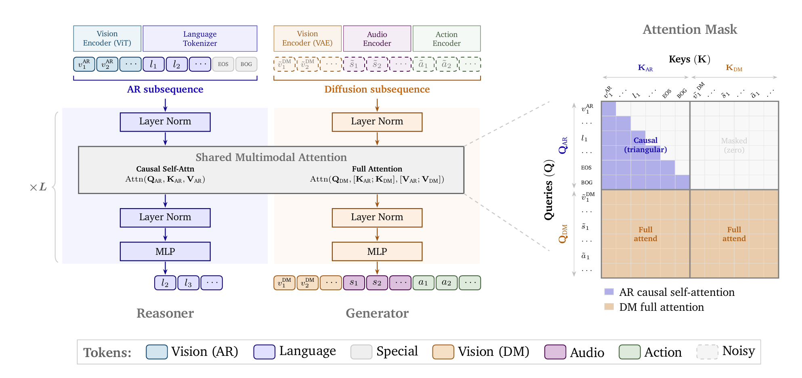
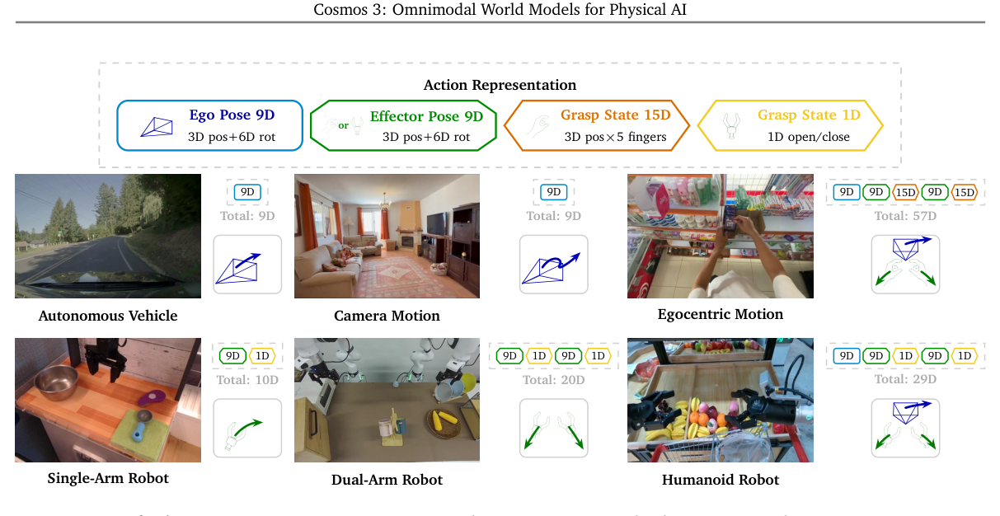
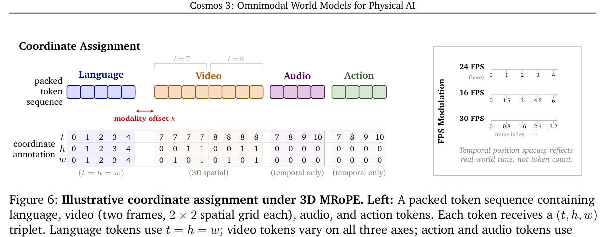
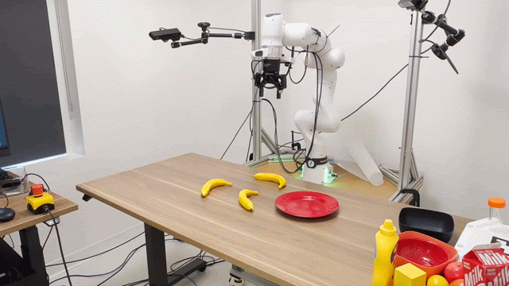
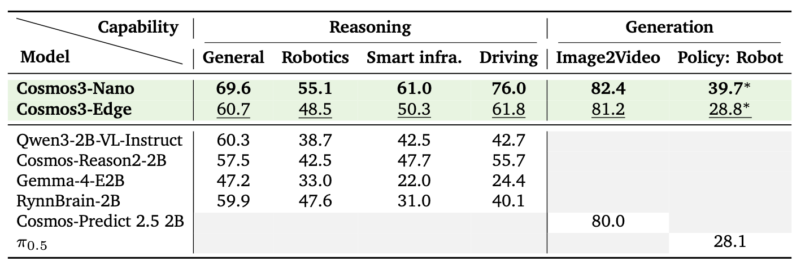
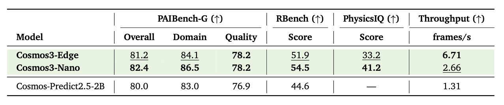
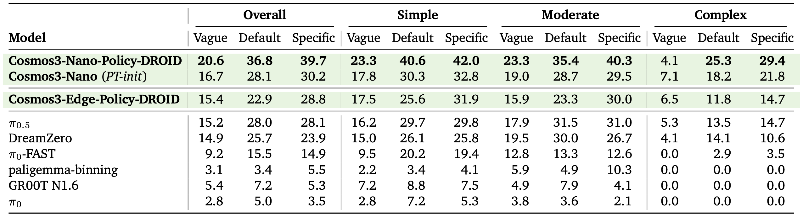

Technical Deep Dive · Edge WAM · MoT
Cosmos 3 Edge：4B Omni-model 如何把 World Action Model 放上边缘设备
Edge 不是把 Cosmos 3 Nano 做一次量化。它重新训练一个 2B dense backbone，再复制为约 2B Reasoner 与约 2B Generator：前者自回归理解文本和视觉，后者通过 diffusion 生成图像、视频与动作。DROID policy 用 4 步去噪一次产生 32×8 动作块，并可跳过视频解码，在 Jetson Thor 上实现的是 chunk-level real-time，而不是每秒运行 15 次模型。
0. 一句话结论 #
Cosmos 3 Edge 解决的是统一 world model 太大、无法靠近传感器部署的问题：它用 4B 双塔 MoT 保留 VLM reasoning、视频 world model 与 action generation，并通过 4-step flow sampling、32-step action chunk 和关闭 VAE decode，把 DROID policy 放到 Jetson AGX Thor；代价是 Edge 的能力明显低于 16B Nano，策略只在部分 RoboLab 指标略胜 $\pi_{0.5}$，而“15 Hz”指动作流执行频率，不是 15 model forward/s。
核心 insight：Edge deployment 的关键不是单纯缩参数，而是改变控制系统的时间预算。模型花约 1.528 秒生成 32 个动作，动作以 15 Hz 执行、覆盖约 2.133 秒；只要下一块在上一块耗尽前生成，就满足实时闭环。

1. 论文定位：Edge 是 Cosmos 3 的第三个尺度 #
| Variant | 总参数 | 每座 tower 的 backbone | 定位 |
|---|---|---|---|
| Cosmos3-Super | 64B | 32B，64 layers，5120 hidden | 数据中心高质量生成 |
| Cosmos3-Nano | 16B | 8B，36 layers，4096 hidden | 工作站级 omni-model |
| Cosmos3-Edge | 4B | 2B，28 layers，2048 hidden | 边缘 reasoning 与 action |
“4B”不是一个 4B Transformer 同时跑两种 token。每个 decoder layer 有两套独立参数：Reasoner 约 2B，Generator 约 2B；它们共享序列与注意力交互方式，而不共享 LayerNorm、QKV projection 和 MLP 权重。额外还有 27-layer、1152D 的 vision encoder，以及冻结的 Wan VAE。
Edge 可以被看成三个接口：
- Small VLM：text/image/video → text，用于 VANTAGE、robotics reasoning 与 driving reasoning。
- World generator：text/image/action → image/video，支持 I2V、forward dynamics、inverse dynamics。
- World Action Model：observation + instruction + state → action + predicted visual consequence；DROID checkpoint 是专门 post-train 的 policy。
它与 Riemann-1.0 的差异也很直接：Riemann 用 action→next observation 的自回归因果顺序；Cosmos 3 policy 把 noisy action 与 noisy future video 放在同一个 diffusion subsequence 中联合去噪。前者强调 interaction order，后者强调同一 model 在 FD/ID/policy 模式之间共享能力。
2. 方法总览：Reasoner 只向 Generator 单向供上下文 #
Understanding path
image/video -> ViT (patch 16, 27 blocks, 1152D)
-> 2x2 spatial merge + projector -> 2048D AR tokens
text -> Nemotron tokenizer -> 2048D AR tokens
-> Reasoner tower: causal next-token prediction
Generation path
image/video -> frozen Wan VAE -> 48-channel latent -> 2x2 latent patch -> DM tokens
action -> normalize -> pad to 64D -> domain-aware projection -> DM tokens
-> Generator tower: rectified-flow denoising
Joint attention
AR query -> attends causal AR keys/values only
DM query -> attends full [AR; DM] keys/values
AR never reads DM, so reasoning conditions generation without reverse leakage
| 配置项 | 模型卡 / 代码值 | 含义 |
|---|---|---|
| Transformer | 28 layers，2048 hidden，16 Q heads，8 KV heads | GQA，head dim 128，FFN 9216 |
| Vision encoder | 27 layers，1152 hidden，patch 16 | 2×2 merge 后投影到 2048D |
| Generator latent | 48 channels，latent patch 2 | Wan VAE 时间压缩 4×，总空间压缩约 32× |
| Action | model width 64，32 embodiment domains | 原始 8D/10D/20D/29D/57D 经专属 projection |
| Position | 3D mRoPE sections [24,20,20] | head 64 rotary dims 分配给 $t,h,w$ |
| Edge generation | BF16，sound_gen=false | 当前 Edge checkpoint 不开放 audio generation |
3. 关键创新点 #
3.1 两座 2B tower，而不是让离散 token 和连续 latent 抢同一套参数
旧方法瓶颈：语言适合 next-token prediction，视频与连续动作适合 diffusion/flow matching。完全共享参数会让 causal attention 与 bidirectional denoising、离散 logits 与连续 velocity 彼此干扰；完全分离又失去共同 world representation。
怎么改：每层有 Reasoner/Generator 两套 Norm、attention projections 和 MLP。AR token 与 DM token 在同一 packed sequence 中，但走不同参数路径，通过 joint attention 交换信息。
为什么有效：Reasoner 保留 VLM 的语义、空间和时序理解；Generator 可以自由使用 full attention 去噪。DM 读取 AR 的 key/value，让文本 reasoning 和 ViT observation 成为生成条件。
代价：参数几乎翻倍，所以 2B backbone 变成 4B omni-model。DM 不能反向更新 AR hidden state；它不是两座 tower 反复对话，而是单向 conditioning。
3.2 Action 不是离散 code，而是按本体投影的连续几何向量
Cosmos 3 把 action 定义成相邻视觉状态之间的 causal transition。共享组件包括 9D pose（3D translation + 6D rotation）和 grasp state：
- 车与 camera motion：9D ego pose delta。
- 单臂：9D EEF pose delta + 1D gripper，共 10D。
- 双臂：左右各 9D + 1D，共 20D。
- ego human：head 9D + 双 wrist 18D + 双手 fingertip 30D，共 57D。
- humanoid：ego 9D + 双臂 20D，共 29D。

代码中的 DomainAwareLinear 用 embedding table 存每个 domain 的矩阵 $W^{(k)}$ 与 bias $b^{(k)}$；ActionProcessor 保留 raw dimension 和 normalizer record，生成后先截掉 padding，再反归一化回执行空间。这个细节决定了“统一 action space”不会破坏本体数值语义。
3.3 3D mRoPE 对齐的是物理时间，不只是 token 序号
Language 使用 $(t,h,w)=(i,i,i)$，退化成普通 1D RoPE；video 使用完整 $(t,h,w)$；action 只用时间坐标 $(t,0,0)$。AR 与 DM 之间再固定错开 15000，避免最后一个语言 token 与首个 diffusion visual token 的位置过近导致过饱和和棋盘格。

视频 TPS 是 fps/4，action TPS 就是控制频率。于是 16 FPS 的 video latent 每步走 $6/(16/4)=1.5$，30 FPS 每步走 $6/(30/4)=0.8$。attention 看到的是近似真实时间差，而不是“都是相邻一个 token”。
3.4 三种 action mode 用 clean/noisy pattern 切换
| Mode | Clean condition | Noisy target | 用途 |
|---|---|---|---|
| Forward Dynamics | 初始 video + action | future video | 给定动作预测视觉后果 |
| Inverse Dynamics | observed video transition | action | 解释导致变化的动作 |
| Policy | 当前 observation / state / language | future video + action | 联合预测干预及其视觉后果 |
PushT 消融中，联合 FD/ID/policy 训练把 ID MSE 从 $1.11\times10^{-3}$ 降到 $3.09\times10^{-4}$，policy coverage 从 74.1% 提到 77.3%，但 FD PSNR 从 27.13 降到 26.22。共享 action structure 有收益，但不是所有任务都无损。
4. 训练与推理流程 #
Edge language backbone
- 从头训练 2B dense LLM：Nemotron corpus 15T tokens，sequence length 8192，BF16。
- AdamW peak LR $1.2\times10^{-3}$，$\beta=(0.9,0.95)$，WD 0.1，grad clip 1.0，WSD schedule。
- 长上下文阶段使用 90B tokens、128K sequence、RoPE base $10^8$，constant LR $1.2\times10^{-5}$。
- Text SFT 使用 26M examples，pack 成约 2.6M sequences，batch 32；约 140K steps / 1.7 epochs 达峰值。
Multimodal Reasoner 与 Generator
- Reasoner 加入 ViT 与 projector，在约 22M pretrain samples 上做 next-token prediction，再用约 2.2M Physical AI SFT samples 专化。
- 训练好的 Reasoner 参数复制初始化 Generator tower，把语义与物理理解先验带到 diffusion path。
- Generator 逐步加入 image、video 与 action 数据。Edge 模型卡列出约 767M image、348M video、7M action generation samples。
- 代码默认 Edge action loss weight 10，image/video noise time 使用 logit-normal / waver 分布，BF16、EMA 0.1、full activation checkpointing。
【不确定】技术报告首发时 Edge 尚未开放，因此完整 generator 章节主要记录 Nano/Super；当前 Edge 模型卡没有单列 Edge generator 的训练 steps、batch、GPU 数与数据重采样比例。合理推测是沿用统一 curriculum 并缩放到 28-layer dense MoT，但只能用训练 config/checkpoint metadata 或官方补充报告验证。
DROID policy inference
prompt + current robot state
3 camera views -> wrist on top + 2 exterior views below -> 540x640 canvas
-> first frame is clean; future 32 frames are empty/noisy slots
state/action -> DROID 8D -> normalize -> pad to 64D
-> policy mode joint denoising
-> UniPC, 4 steps, shift 5, CFG 3
-> predicted action [32, 8]
-> skip VAE video decode by default
-> WebSocket response -> execute at 15 Hz
decode_video=false，只返回动作，避免 VAE decode 占用控制时延。5. 关键公式与代码张量 #
5.1 Relative SE(3) pseudo-action
$\Delta p_t\in\mathbb R^3$，Rot6D 是过参数化旋转，$g_t$ 是当前 grasp state 而非差分。代码将预测 Rot6D 经 SVD 正交化回 $SO(3)$。使用 state difference 可以绕过 PID 和底层 motor command，但它是 pseudo-action，不一定等于真实控制输入。
5.2 Domain-aware projection
$k\in\{1,\dots,32\}$ 是 embodiment domain；$x_t\in\mathbb R^{d_k}$，模型内部 action tensor pad 到 64D，再投到 2048D token。代码中的权重表形状等价于 $[K,d_{out}d_{in}]$，每个 batch sample 按 domain ID 取矩阵并做 batched matmul。
5.3 Dual-stream attention
关键不是 concat 本身，而是非对称性：$O_{AR}$ 没有 $K_{DM},V_{DM}$。Generator 读取 Reasoner，Reasoner 不读取 noisy/generated modality，因此不会破坏 next-token causal semantics。
5.4 Rectified flow
$x$ 可以是 48-channel video latent 或 padded action sequence。训练随机采一个 noise time；部署从 Gaussian noise 出发用 UniPC 积分。Edge policy 把通常几十步的 diffusion 压到 4 步，这是时延下降的主要来源之一。
5.5 Chunk-level real-time factor
T5000 上 $H=32,f_{ctrl}=15,T_{E2E}=1.528$，RTF=1.40。它的含义是每块生成速度比消费速度快 40%，不是 15 Hz inference。若没有异步预取，chunk boundary 仍可能有停顿；模型卡没有报告 sensor→server→controller 全系统 jitter。
6. 训练与推理细节对齐 #
| 检查项 | 训练 / 模型内部 | 部署 | 影响 |
|---|---|---|---|
| Future video | 与 action 联合预测，提供 auxiliary world loss | 默认不 VAE decode | 保留 representation shaping，省去解码时延 |
| Action horizon | checkpoint metadata 为 32 steps / 15 Hz | 整块返回并执行 | 块内反馈频率低于低层控制频率 |
| Denoising | 随机 noise-time velocity regression | 4-step UniPC，CFG 3，shift 5 | 极少步采样可能牺牲多模态动作精度 |
| Observation history | DROID trajectory window | server 默认 history_length=1 | 动态状态主要靠当前图像/state 推断 |
| Action dimension | 多本体 pad 到 64D | DROID 截回 8D、反转 gripper convention | 代码显式处理 train/robot convention |
| Visual resolution | DROID 原图 360×640，三视角 canvas 540×640 | real-time 表写 640×540→544×736 bucket | HF 博客的 640×360 不是完整 server tensor |
| Reasoner context | 128K extension | 报告目标 32K；config 131072；模型卡写 256K | 最大可靠 context 存在来源冲突 |
【不确定】上下文长度有三种公开口径：技术报告训练 128K、主要面向部署 32K；Transformers config 的
max_position_embeddings是 131072；模型卡宣称最高 256K。可能分别指训练长度、保守质量长度和 processor 接受长度。验证时应在 32K/128K/256K 做 needle retrieval 与显存测试，不能只看 tokenizer 是否接受输入。
7. 实验复盘：Edge 的优势首先是效率，不是全面胜过 Nano #

| 能力 | Edge | Nano | 关键解释 |
|---|---|---|---|
| General reasoning avg. | 60.7 | 69.6 | Edge 仅略高 Qwen3-2B-VL 60.3 |
| Robotics reasoning avg. | 48.5 | 55.1 | 高于 Qwen3-2B-VL 38.7 |
| Smart infrastructure avg. | 50.3 | 61.0 | 同尺寸组中最佳，支撑 VANTAGE claim |
| Driving reasoning avg. | 61.8 | 76.0 | 明显高于 Qwen3-2B-VL 42.7 |
| I2V PAIBench-G | 81.2 | 82.4 | 质量接近，吞吐差距大 |
| RoboLab specific prompt | 28.8 | 39.7 | 略高 $\pi_{0.5}$ 28.1 |


Edge real-time 表该怎么读
| 平台 | Median E2E | RTF@15Hz | 是否满足 15Hz action stream |
|---|---|---|---|
| Jetson AGX Thor T5000 128GB | 1.528 s | 1.40 | 是 |
| Thor T4000 64GB | 2.208 s | 0.97 | 否，约慢 3.5% |
| Thor T3000 32GB（模拟配置） | 2.632 s | 0.81 | 否 |
| Thor T2000 16GB | 5.195 s | 0.41 | 否；需要 swap 配置 |
实验中的隐藏 confound
- vLLM-Omni 与 PyTorch 表使用不同 resolution、denoising steps、guidance 和测量协议，官方也明确禁止横向直比。
- 15 Hz 只有 T5000 PyTorch 4-step 配置通过；“包括 Jetson T2000/T3000”表示模型可运行，不等于都达到 15 Hz。
- RoboLab 是 DROID 外的模拟 benchmark，但 Edge 缺少真实机器人 leaderboard 结果；发布页示例不能代替真机统计。
- Reasoning benchmark 是大量子榜平均，比较模型的训练数据不受控；“同尺寸”也不等于同 FLOPs、视觉 token 数或 context。
- 4-step policy 的动作质量没有与 30-step 同 checkpoint 做 success/latency Pareto 消融。
8. 可复现清单 #
| 模块 | 关键实现 | 复现坑点 |
|---|---|---|
| Checkpoint | nvidia/Cosmos3-Edge / Edge-Policy-DROID | OpenMDW-1.1；仅正式测试 BF16 |
| Reasoner | Transformers 只加载 Reasoner tower | Generator/VAE/scheduler 仍由 Diffusers/Cosmos Framework 管理 |
| MoT | 28×2048，two-way joint attention | 不要误写成两塔共享全部 attention weights |
| Action | 32 domains、max 64D、quantile/meanstd/minmax normalizer | rotation convention、gripper flip、pad mask 必须与训练一致 |
| DROID input | wrist top + two exterior bottom，state 8D | 三视角顺序、resize bucket、RGB uint8 约定 |
| Policy sample | 32 actions、15 Hz、4 UniPC steps、shift 5、CFG 3 | 默认 seed 每次变化；评测需固定或报告多 seed |
| Serving | WebSocket policy server + RoboLab client | 默认串行 lock；多机器人并发需要独立容量规划 |
| Latency | warmup 后报告 E2E、range、RTF | 必须包含 preprocess/HTTP；不能只报 kernel time |
| Video output | decode_video=false 默认关闭 | 开启 VAE decode 后不再沿用原 latency 结论 |
| Post-training | 公开 Nano DROID/LIBERO recipe | 截至 7/21 未发现 Edge-specific DROID launch config |
最短运行路径是 Cosmos Framework 容器中启动 action_policy_server_robolab，checkpoint 指向 Edge-Policy-DROID，并让 RoboLab client 通过 WebSocket 请求动作。源码已公开 server、DROID adapter、normalizer、domain projection 与 inference loop；完整 base pretraining 不具备现实复现条件。
9. 可能的改进方向 #
| 改动点 | 预期收益 | 风险 | 验证实验 |
|---|---|---|---|
| 异步双缓冲 action chunk | 隐藏 1.5 s 推理时延，消除 chunk boundary 停顿 | 旧 chunk 与新观测不一致 | 同步 vs overlap，报告 jitter、SR 与 emergency replan |
| 动态 horizon 8/16/32 | 接触阶段短 horizon，空移阶段长 horizon | 不同长度分布可能破坏 flow calibration | 按 contact probability 切换，画 latency-success Pareto |
| distill 4-step policy，而不只直接少步采样 | 恢复少步动作质量 | teacher cost 高、mode collapse | 30-step teacher→4-step DMD/consistency distillation |
| 低频 Reasoner + 高频 Generator | reasoning 不必每块重算，减少 AR cost | 任务状态变化后 plan stale | 缓存 reasoning tokens，按事件触发刷新 |
| state/contact auxiliary head | 比 RGB rollout 更直接约束控制后果 | 跨本体 sensor schema 难统一 | video-only vs video+proprio+contact 的真机消融 |
| FP8/FP4 Edge deployment | 降低显存与时延，覆盖 T3000/T2000 | 当前只验证 BF16，flow/action 对量化敏感 | 逐 tower mixed precision，报告 action MSE 与 closed-loop SR |
10. 速读备忘卡 #
- Cosmos3-Edge 是 4B omni-model，2026-07-20 开放。
- 4B 主要来自约 2B Reasoner + 约 2B Generator。
- 两塔独立 Norm/QKV/MLP，通过 joint attention 连接。
- AR 只能看 AR；DM 能看 AR+DM，信息流单向。
- Edge 是从头训练的 2B dense backbone，不是 Nano 的量化版。
- 视觉理解用 ViT，视觉生成用冻结 Wan VAE。
- 动作由 relative pose + grasp state 构成，不是离散 action code。
- 多本体动作 pad 到 64D，但 projection 按 32 个 domain 分开。
- 3D mRoPE 用 FPS modulation 对齐真实物理时间。
- FD、ID、policy 通过 clean/noisy token pattern 切换。
- DROID policy 一次生成 $[32,8]$ 动作块，4-step UniPC。
- 15 Hz 是动作执行率；T5000 模型约 1.528 秒生成一块。
- Edge I2V 吞吐 6.71 frames/s，质量略低 Nano。
- RoboLab specific prompt 略胜 $\pi_{0.5}$，但 default prompt 并非最佳。
- 代码可运行 inference/server；Edge-specific policy post-train recipe 仍不完整。
一句话记忆：Cosmos 3 Edge 不是让模型以 15 Hz 思考，而是让模型提前生成足够长的动作缓存，使控制流能以 15 Hz 连续消费。